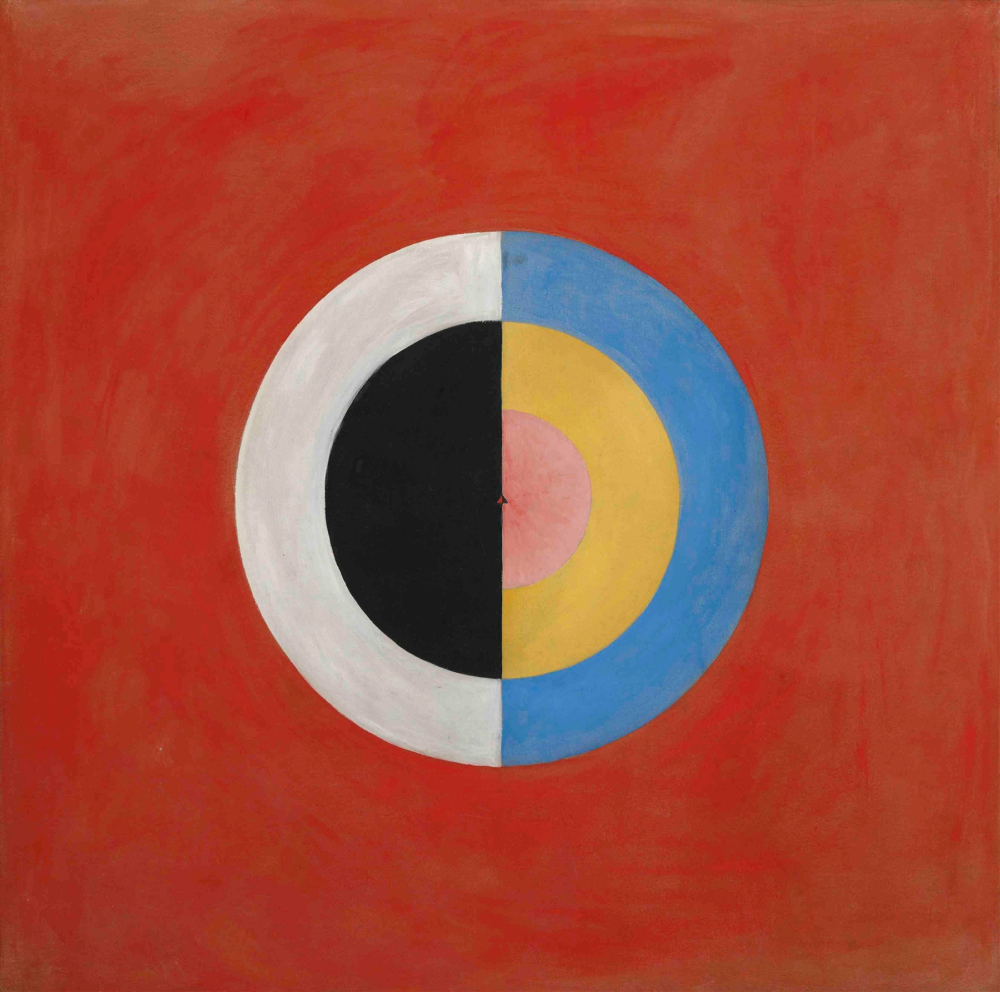

projet.y aims to build a multidisciplinary community shaping the future of intelligent systems. Through the seminar Symbolon and *PMMC2*, uniting philosophers, sociologists, anthropologists, computer scientists, and mathematicians, it delves into the ethical, societal, and technical dimensions of AI. This exploration holds transformative potential, advancing science and technology while opening new frontiers in human self-understanding. By challenging established roles in modern society, Project.Y redefines how AI intersects with technological progress and sociological insight.
With a strong focus on programming and scientific computing outlined in our collaboration page, projet.y bridges AI and HPC. Our Sorbonne thesis investigates agentic systems, laying the groundwork for breakthroughs in software engineering and human-AI interaction, while our partnership with SURF explores AI algorithms for scientific discovery.